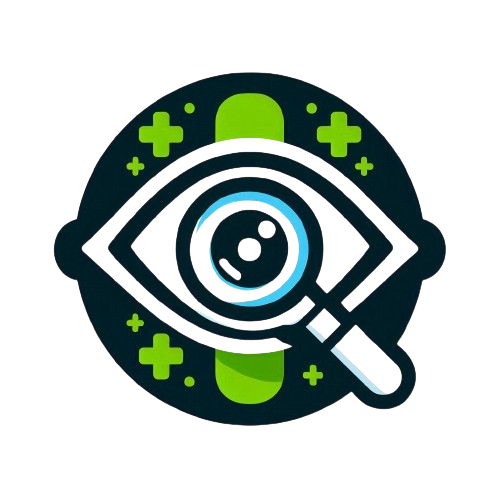
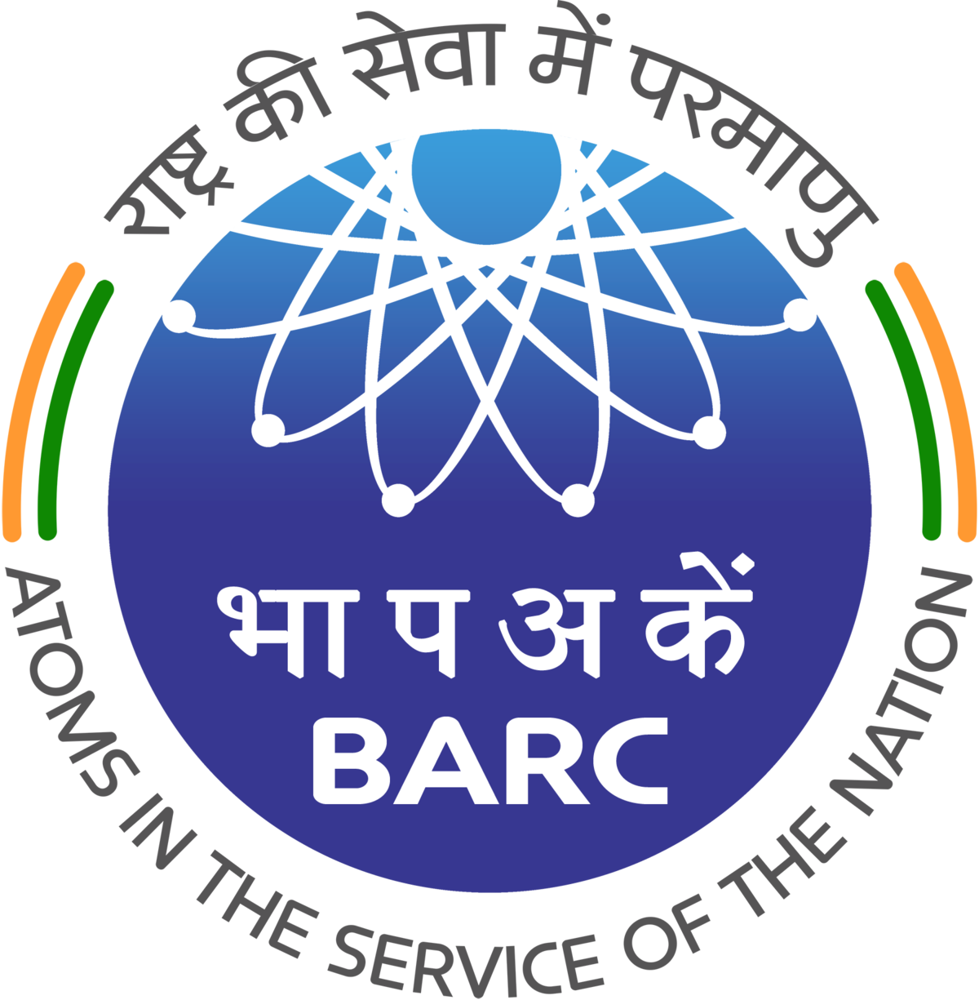
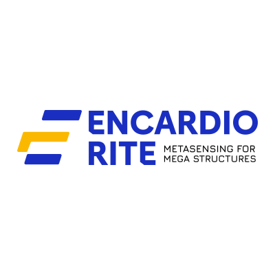
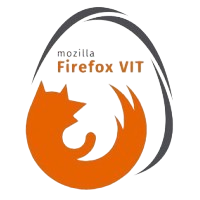

Discover my journey through innovative projects, valuable experiences, and continuous growth
About Me
Hi, I'm Heet Mehta, an incoming MS CS student at NYU Tandon with a B.Tech in IT (CGPA: 9.14) from VIT Vellore. I specialize in software development, data science, and machine learning, with hands-on experience in full-stack web apps, blockchain, and smart contracts.
My tech stack includes Python, Java, C++, React.js, Tailwind, Firebase, SQL, and MongoDB. I'm passionate about building impactful, scalable solutions at the intersection of technology and society.

Education
New York University, Tandon School of Engineering
Masters in Computer Science | Brooklyn, New York
May 2027 (Expected)
- Relevant Courses: Software Engineering, Design & Analysis of Algorithms, Machine Learning

Vellore Institute of Technology
Bachelor of Technology (Information Technology) | Tamil Nadu, India
June 2025
- Cumulative GPA: 9.14 / 10
Projects
EthAuction
- Designed and launched EtherAuction, an innovative auction platform leveraging the Ethereum blockchain to facilitate seamless transactions and secure bidding on a diverse range of 15 products.
- Executed smart contract functionalities using Solidity and integrated Web3.js for Ethereum blockchain interaction, reducing transaction fees by 3%.
Diabetic Retinopathy Detection App
- Built an AI-powered web application for detecting diabetic retinopathy from retinal images, using Streamlit, Python, and Scikit-learn, which enabled immediate, on-demand screening.
- Achieved a detection accuracy increase of 25% by refining the machine learning model with advanced hyperparameter tuning and cross-validation techniques.
Flavour Quest
- Developed a full-stack web application that enables users to search for and view recipes based on ingredients.
- Built the user interface using React, including components for searching recipes and displaying detailed recipe information.
- Implemented a RESTful API using Node.js and Express to handle requests and interact with TheMealDB API.
- Deployed the application on Vercel, configuring environment variables and ensuring smooth deployment.
Titan: End-To-End Machine Learning Pipeline Development
- Built a comprehensive machine learning pipeline, enhancing data processing and model deployment for a mid-sized retail company using Python, Scikit-Learn, and Docker.
- Achieved a 45% reduction in model training time by optimizing data ingestion and transformation processes with Apache Airflow.
Experience
Project Intern at Bhabha Atomic Research Centre (BARC)
- Developed and deployed a BLE-based visitor tracking system using Raspberry Pi and BLE beacons to monitor and detect Bluetooth devices in real-time.
- Implemented trilateration algorithms for accurate indoor positioning, enhancing the precision of device localization and data analysis.
Software Development Intern at Encardio Rite Pvt Ltd
- Developed and deployed a predictive maintenance system using Python and machine learning algorithms to enhance the safety and reliability of critical infrastructure such as bridges, tunnels, and dams.
- Integrated real-time sensor data from geotechnical monitoring systems, providing comprehensive and continuous health assessments of megastructures.
- Created interactive dashboards using React.JS and D3.js to visualize structural health metrics, predictive analytics, and maintenance alerts, enabling engineers to make informed decisions quickly.
Volunteering
Becoming I Foundation (BIF-VIT)
- Finance Head
- Led finance department, ensuring accurate budgeting, reporting, and compliance.
- Secured and managed sponsorships, increasing financial support.
- Conducted financial analysis, identifying cost savings and revenue opportunities.
Mozilla Firefox Club-VIT
- Committee Member
- Coordinated events attended by 200+ participants annually, promoting web literacy and open-source contributions.
- Conducted bi-monthly workshops with an average attendance of 50 members, enhancing skills in web development and Firefox browser customization.
Certifications
- Applied Data Science With Python - IBM
- Data Analysis With Python - IBM
- Data Visualization With Python - IBM
- Python 101 for Data Science - IBM
- Fundamentals Of Digital Marketing - Google
Publications

H. Mehta, K. Sanghavi, G. Pawade, M. Konde, S. Singh, S. R., "Applications of Machine Learning in Detecting Unethical Sources of Raw Materials in Supply Chains in the Cosmetic Industry," 4th International Conference on Sustainable Expert Systems (ICSES 2024), Online, IEEE XPLORE COMPLIANT DOI: 10.1109/ICSES63445.2024.10763049, organized by Pokhara University, Lekhnath, Kaski, Nepal.